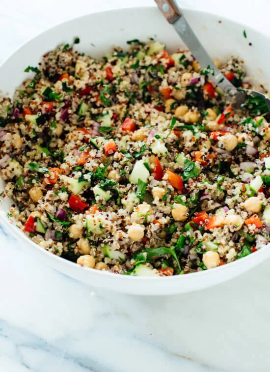

Odin Recipes
The best Vegan Lasagna on the local web
Swedish classic
Västerbotten
Cheese Pie

Delicious Quinoa Salad
How?!
This online curriculum helped me along the way to create this website, and learn more about front-end development in general!